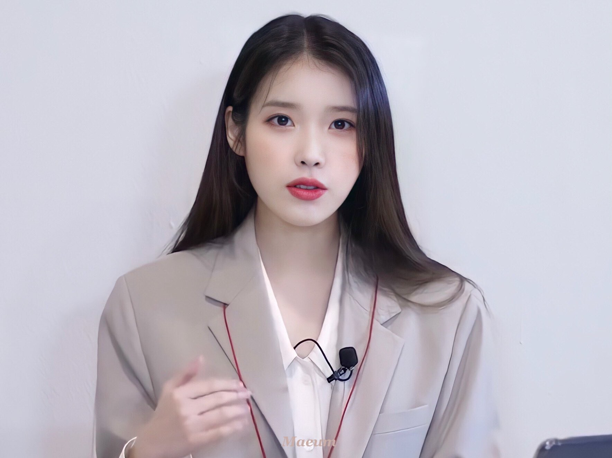

이지동

2020년 9월 7일자로 이담엔터테인먼트에 입사한 신입사원으로, 현재는 정규직으로 전환되었다고 한다.
아이유의 공식 유튜브 채널에 《엔터 직장인 이지동》이라는 콘텐츠에 출연하고 있다.
- 아이유와 매우 닮았지만 이지동은 오른쪽 눈 밑의 점이 있으므로 둘을 혼동하지 않도록 주의하자.
- 전형적인 열정만 넘치는 유형이다. 실제로 정규 5집 LILAC 콘셉트 회의에서 코로나 19 상황 때문에 사실상 불가능한 베니스를 가자고 하거나 아이유에게 밀가루를 붓고 달걀을 던지자고 하는 등 실현하기 힘든 의견을 내놓아 상사가 힘들다고 말한 뒤에도 유정란을 준비하겠다고 끝까지 말해 회사 상사들에게 눈총을 받았다.
- 아이유의 인스타그램에 이지동이 준비한 자료들과 색감이 비슷한 정규 5집 티저들이 올라왔다. 또 그녀가 제시한 앨범 콘셉트와 어느 정도 일치하는 떡밥들이 공개된 만큼, 신입사원의 틀을 벗어나 다양한 아이디어를 제시하고 있는 듯하다.
- 대학 시절 조별과제를 할 때 항상 PPT를 담당했다고 한다.
- 입사 6개월 만에 상사들에게 실력을 인정받은 듯하다. 실제로 어떤 상사는 "이제 인턴 떼도 되겠는데?"라고 말하기도 했다.
- 어릴 때 무술을 했다고 한다. 아이유의 정규 5집의 타이틀 곡 <라일락> 뮤직비디오에 액션신이 있다면 대역으로 참여하고 싶다는 의지를 보였다.
- 《IU TV》에서 이지동이 이담엔터테인먼트 대표의 낙하산이었던 것으로 밝혀졌다. 아이유가 스포를 자주 하는 이지동을 눈물 쏙 빠지게 다그쳤으나, 이지동이 그 이후에 또 다시 스포를 했다는 사실이 밝혀졌다. 이에 아이유는 낙하산이라 자를 수도 없다며 한숨을 쉬었다.
- 배우 신세경이 이담엔터테인먼트 소속이 되자 선물을 갖고 와서 환영해주기도 했다. 영상
- 2021년 10월 8일 0시, 이담엔터테인먼트의 인스타그램에 영어 신문 형식으로 된 의 콘셉트 무빙 티저가 공개되었는데, 기자 이름이 'Lee jidong'이라고 적혀 있다.